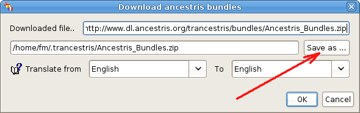
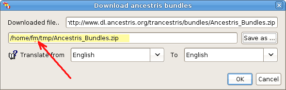
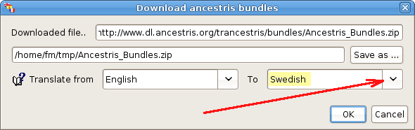
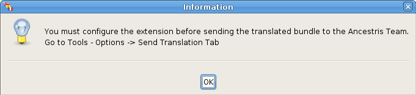
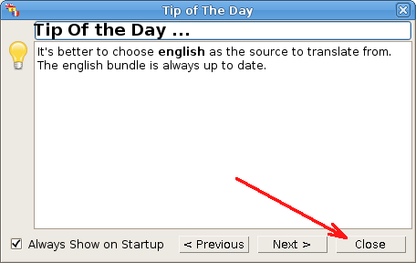
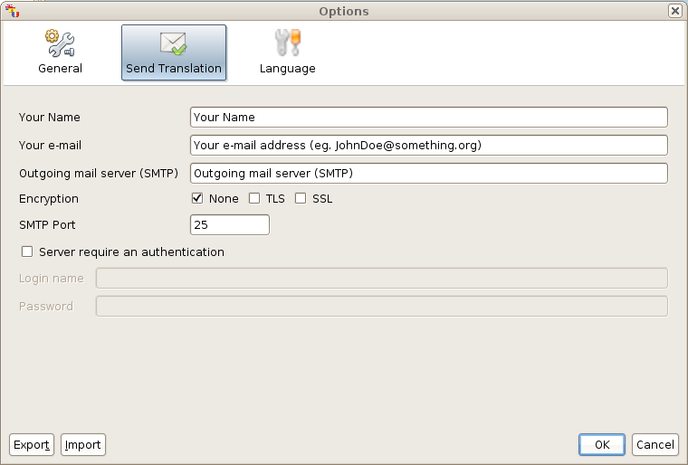

There, you have two things to check:
The first one is the place where you want to save on your hard disk the file you will download named "Ancestris_Bundles.zip" which contains all the properties files. Those files will have sentences, words to translate, but also the ones already translated.
Change the location, the path, using the "Save as..." button. On the screen capture below, we changed the location from "/home/fm/.trancestris", to "/home/fm/tmp". Of course, don't change the name of the file Ancestris_Bundles.zip.
Something else, don't change the first line, it's the repository of the bundles file.

Once done, you have to tell the program which language you want to translate to. It's better to keep "English" as source language, but you have to choose the destination language. Let's say we want to translate from English to Swedish. Use the pull down menu on the right, to select the right language, here Swedish.

What's happen next? a message pops up. Click on "OK".

You have now, to configure the settings to be able to send your translation once done, to the Ancestris Team.
It's possible that a message which gives you different tips, appear. It's the "Tip of a Day" screen. Click on "Close" to get rid of it. But it's always a good idea to read them, from time to time.

Another message will pop up. It's a message to give you the information that the file "Ancestris_Bundles.zip" has been downloaded in the background, while you were configuring Trancestris.
Simply, click on "OK", to close it.

Behind the window "Tip of the Day", you will find, once closed, a menu where you have to configure your settings to be able to send your work (your translations), to the Ancestris Team.

To configure it, see the Configuration - Send Translation explanations.
Great, we are ready to begin to translate :-)